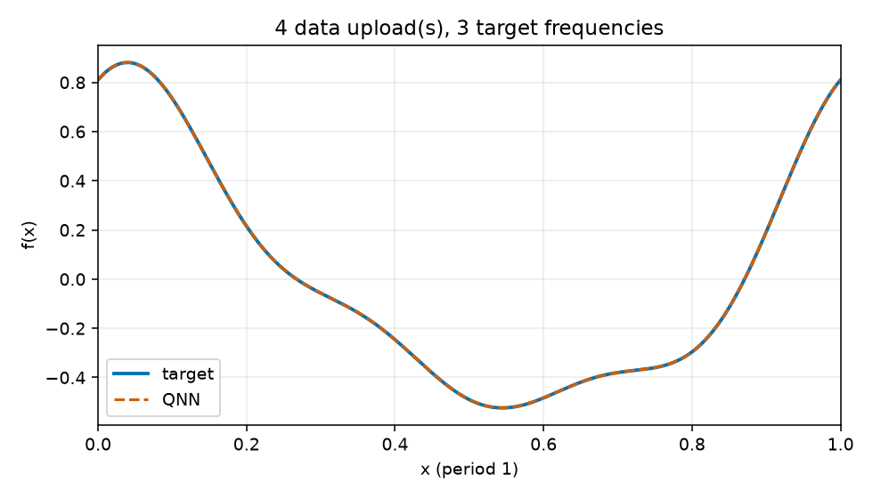
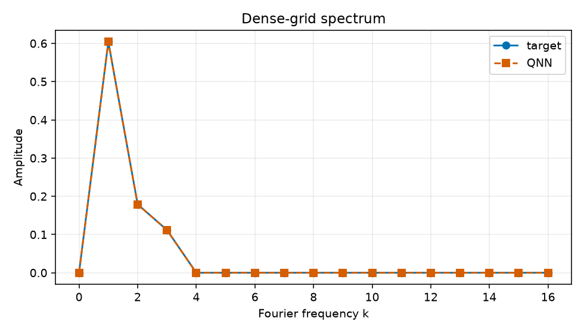

Uploads: 4; target frequencies: 3; train/validation/test: 64/128/512; objective: empirical training MSE only.
{
"run_id": "20261017T024008403245Z_reupload-4_k3_seed-0046_42a972c6",
"comparison_group": "periodic-function-mse-zero-offset-reupload-sweep-z1-readout",
"data_uploads": 4,
"n_target_frequencies": 3,
"seed": 46,
"data_seed": 314159,
"dataset_sizes": {
"train": 64,
"validation": 128,
"test": 512
},
"target_components": [
[
1,
0.55,
0.25
],
[
2,
0.16,
0.08
],
[
3,
0.1,
0.05
]
],
"target_offset": 0.0,
"objective": "training-set MSE only",
"optimizer": "L-BFGS-B",
"iterations": 55,
"function_evaluations": 1711,
"optimizer_success": true,
"optimizer_message": "CONVERGENCE: RELATIVE REDUCTION OF F <= FACTR*EPSMCH",
"initial_train_mse": 0.5752055592079282,
"final_train_mse": 2.0014041813879363e-13,
"validation_mse": 1.7605236946633921e-13,
"test_mse": 2.6980565926640403e-13,
"known_frequency_fourier_baseline_test_mse": 2.126123450199506e-31,
"target_support": [
1,
2,
3
],
"predicted_support": [
1,
2,
3
],
"frequency_support_threshold_function_amplitude": 0.001,
"support_precision": 1.0,
"support_recall": 1.0,
"target_amplitudes_k0_to_16": [
3.129278520336287e-17,
0.6041522986797286,
0.1788854381999832,
0.11180339887498952,
2.1726615721703016e-17,
2.08338919985173e-17,
7.086725680473781e-18,
1.617279816428843e-17,
3.84330175122779e-18,
9.78496767727623e-18,
2.5811241320803445e-18,
5.559232478380886e-18,
4.36389433120424e-18,
8.739851310843146e-19,
2.3793742160921822e-18,
1.2134355070255081e-17,
6.278752932072422e-18
],
"predicted_amplitudes_k0_to_16": [
1.2949180671961496e-07,
0.6041524008766029,
0.17888553066951982,
0.11180313640469215,
5.477688596231216e-07,
3.7296425000821666e-17,
1.357753895721795e-17,
1.9558534307452765e-17,
1.3070153374063925e-17,
9.035966742401742e-18,
1.1197283273693353e-17,
1.2802237952338896e-17,
7.444996247285794e-18,
8.327050123637126e-18,
2.809080279412122e-17,
1.8560277641132364e-17,
2.0078457114576818e-17
],
"frequency_amplitude_rmse_k0_to_16": 1.5429237426691607e-07,
"artifacts": [
"dataset.npz",
"metrics.jsonl",
"parameters.npz",
"parameters.json",
"evaluation_outputs.npz",
"function_fit.png",
"spectrum.png",
"report.html"
]
}
